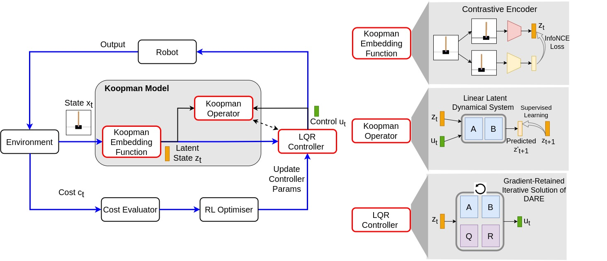
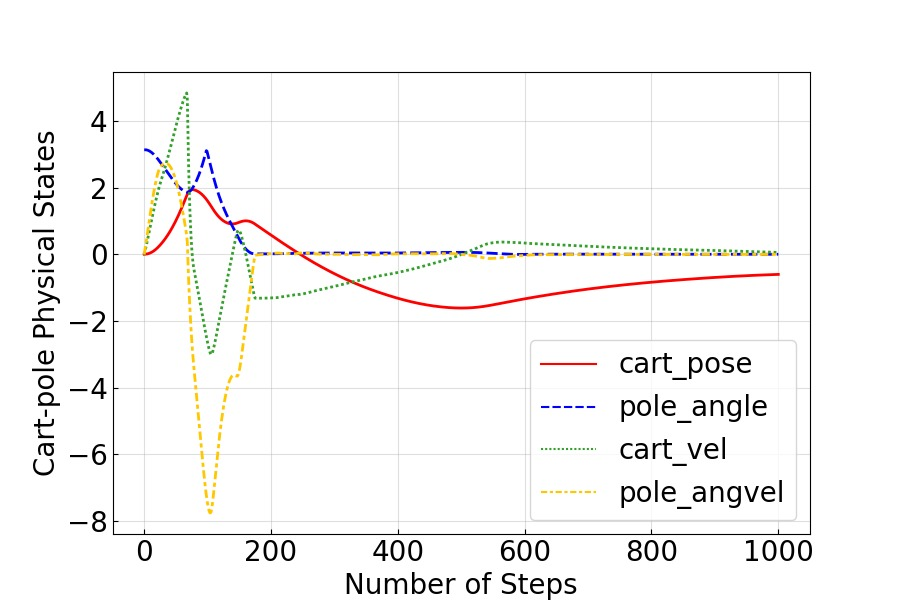
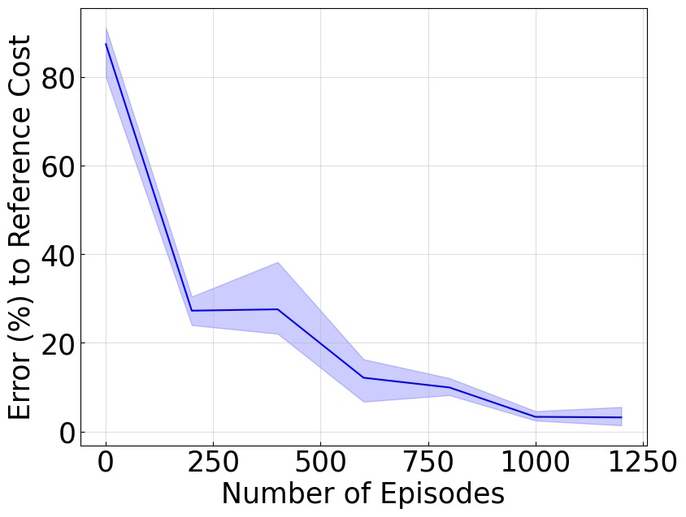
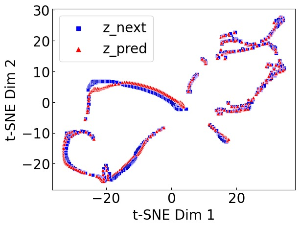
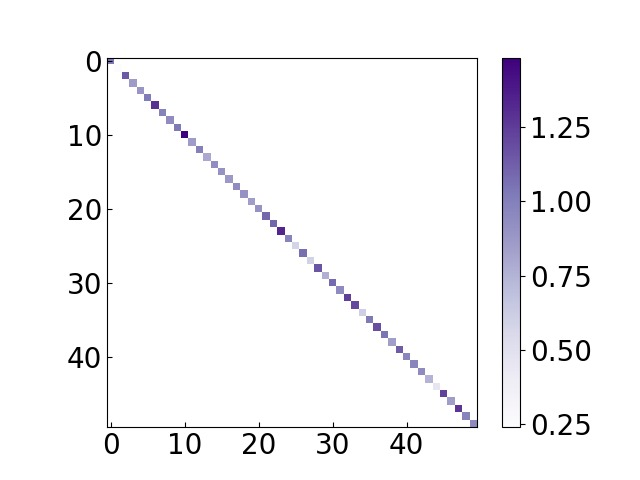

Task-Oriented Koopman-Based Control with Contrastive Encoder
论文信息 - 作者：Xubo Lyu, Hanyang Hu (Simon Fraser University); Seth Siriya, Ye Pu (University of Melbourne); Mo Chen (Simon Fraser University) - 通讯作者：Mo Chen (mochen@cs.sfu.ca), Ye Pu (ye.pu@unimelb.edu.au) - 投稿方向：CoRL 2023 (Conference on Robot Learning) — Oral Spotlight - arXiv ID：2309.16077 - 代码：https://sites.google.com/view/kpmlilatsupp/
一、核心问题
机器人控制面临经典两难：
- 非线性控制：能处理复杂系统，但需要精确的非线性动力学模型（难以获取），且计算复杂耗时。
- 线性控制（如 LQR）：简单高效，但面对高度非线性的真实系统时性能差甚至不稳定。
Koopman 控制试图调和二者——将非线性系统动力学映射到 latent 空间，使其在该空间中呈（全局）线性，从而能用线性控制理论处理。但现有 Koopman 控制方法存在两个关键瓶颈：
- 两阶段依赖：先识别 Koopman 模型（找 embedding + operator）→ 再基于模型设计控制器。控制器的性能高度依赖模型预测精度——模型稍有误差，控制器性能就急剧恶化。
- 隐空间调参困难：LQR 的 Q、R 矩阵在 latent 空间中缺乏直接物理含义，需要反复手动调参。在高维 latent 系统（如 50 维）中几乎不可行。
这两个瓶颈将现有 Koopman 控制方法限制在低维、简单系统中，无法扩展到 pixel-based 控制、高维运动控制（如 18D Cheetah）或真实机器人等复杂场景。
本文核心主张：不要以模型预测精度为最高目标，而应以任务控制性能为第一优先级——让模型为控制服务，而非控制为模型服务。
二、核心思路 / 方法
2.1 总体框架：End-to-End RL × Koopman × Contrastive Encoder
本文提出了一个单阶段、端到端的 RL 框架，同时学习三个组件：

图1：方法总览架构图。整个框架在一次端到端 RL 循环中同时学习三个组件：(1) 对比编码器（Contrastive Encoder） 作为 Koopman 嵌入函数 ψ_θ，将原始状态 x（物理状态或像素）映射到 latent 空间 z；(2) 线性矩阵 A、B 作为 Koopman 算子，描述 latent 空间中的线性动力学 z' = Az + Bu；(3) 可微 LQR 控制器，基于当前 latent 状态 z 和学到的 A、B、Q、R 参数，通过有限次 DARE 迭代生成控制量 u = -Gz。三个损失函数协同优化：SAC 的 RL 任务损失 L_sac（主目标，优化全部参数）、对比表示损失 L_cst（辅助，更新编码器）、模型预测损失 L_m（辅助，更新 A、B 矩阵）。图中展示了从环境交互到梯度更新的完整数据流闭环。
核心思想转变：传统两阶段流程（先辨识模型 → 再设计控制器）被合并为单一端到端循环，其中：
- RL 的 task cost 是主导优化目标——驱动所有参数学习
- 模型预测误差退居辅助目标——提供正则化，但不主导控制器更新
- 控制器不再高度依赖模型精度，对模型误差具有鲁棒性
2.2 对比编码器作为 Koopman Embedding
传统的 autoencoder 在 pixel-based 任务中勉强可用，但在物理状态任务中难以学到有效表示。本文采用对比编码器：
- 使用两个编码器 $\psi_{\theta_q}$（query）和 $\psi_{\theta_k}$（key），采用动量更新（MoCo 风格）
- 对每个状态 $\mathbf{x}_i$，通过数据增强生成正样本 $\mathbf{x}_i^+$，其他状态作为负样本 $\{\mathbf{x}_j^-\}$
- Pixel 状态：使用卷积编码器 + 随机裁剪增强
- 物理状态：使用全连接编码器 + 均匀噪声增强 $\Delta\mathbf{x} \sim U(-\eta|\mathbf{x}|, \eta|\mathbf{x}|)$
对比损失（InfoNCE）：
最终只用 $\psi_{\theta_q}$ 作为 Koopman 嵌入函数，简记为 $\psi_{\theta}$。
2.3 线性矩阵作为 Koopman Operator
Koopman latent dynamics 建模为标准的线性时不变系统：
其中 $\mathbf{z}_k = \psi_\theta(\mathbf{x}_k)$ 是 latent 嵌入，$\mathbf{A}$ 和 $\mathbf{B}$ 是可学习的矩阵参数。预测误差用 MSE：
2.4 LQR-In-The-Loop：可微的线性控制器（关键技术贡献）
这是本文最具原创性的工程贡献——将 LQR 控制器做成可微模块嵌入到梯度优化回路中。
LQR 问题（latent 空间）：
其中 $\mathbf{Q}$ 和 $\mathbf{R}$ 设为对角矩阵以保证正定性。$\mathbf{z}_\text{ref}$ 从参考状态编码得到，若无显式参考（如 Cheetah 奔跑）则设为 $\mathbf{0}$。
求解 LQR 需要解 DARE（Discrete-time Algebraic Riccati Equation）。本文采用有限次迭代求解（M < 10 次）：
这样，控制策略 $\pi_{\text{LQR}}(\mathbf{z}|\mathbf{A},\mathbf{B},\mathbf{Q},\mathbf{R})$ 对参数组 $\boldsymbol{\Omega}=\{\mathbf{Q}, \mathbf{R}, \mathbf{A}, \mathbf{B}, \psi_{\theta}\}$ 完全可微，可以用 SAC 通过梯度反向传播优化所有参数。
2.5 训练流程：三目标联合优化
Algorithm: End-to-End Learning for Koopman Control
Initialize: Q, R, A, B, ψ_θ, replay buffer D
for each iteration η:
1. 用 π_LQR (通过 DARE) 收集 rollout τ_η 到 D
2. 从 D 采样 batch B
3. 计算三个损失:
- L_sac (主目标): ← 梯度更新全部 Ω
- L_cst (辅助): ← 更新 ψ_θ
- L_m (辅助): ← 更新 A, B
4. 梯度更新所有参数
设计哲学：$\mathcal{L}_{\text{sac}}$ 是主导优化目标，驱动所有参数（包括 Q、R）向更好的控制性能方向优化；$\mathcal{L}_{\text{cst}}$ 和 $\mathcal{L}_{\text{m}}$ 仅提供正则化，确保学到有意义的 latent 表示和准确的线性模型。
三、训练目标：三个损失的层次化设计
| 损失函数 | 优化对象 | 作用 | 优先级 |
|---|---|---|---|
| $\mathcal{L}_{\text{sac}} = \mathbb{E}_{\mathbf{t} \sim \mathcal{B}}[\min_{i=1,2} Q_i(\mathbf{z}, \mathbf{u})-\alpha \log \pi_{\text{sac}}(\mathbf{u} \mid \mathbf{z})]$ | 全部 $\boldsymbol{\Omega}$ | 最大化 task reward，驱动控制性能 | 主目标 |
| $\mathcal{L}_{\text{cst}}$ (InfoNCE) | $\psi_\theta$ | 确保 latent 表示的判别性，正样本近、负样本远 | 辅助正则 |
| $\mathcal{L}_{\text{m}}$ (MSE) | $\mathbf{A}, \mathbf{B}$ | 确保 latent 空间中的动力学线性 | 辅助正则 |
注意：$\mathcal{L}_{\text{sac}}$ 作用于全部参数，而两个辅助损失各作用于其相关参数。这种"主目标覆盖全部、辅助目标各管一块"的设计，确保了控制性能始终是最高优先级。
四、实验与结果
4.1 实验设置
三个 DeepMind Control Suite 任务（系统模型均假设未知）：
| 任务 | 状态空间 | 控制空间 | 特点 |
|---|---|---|---|
| CartPole Swingup (4D) | 4D 物理状态 | 1D 力 | 经典倒立摆，低维 |
| Cheetah Running (18D) | 18D 运动学状态 | 6D 关节力矩 | 高维复杂运动 |
| CartPole Swingup (Pixel) | 像素图像 | 1D 力 | 高维视觉输入 |
4.2 系统行为与控制性能

图2：Koopman 控制器驱动的系统行为可视化。该图包含两组子图：(a) 4D CartPole 系统的受控状态曲线，展示了位置、角度、速度等多个状态变量随时间演化的轨迹，系统成功完成 swingup 并保持平衡稳定；(b) 右侧上下两张快照序列分别展示了 pixel-based CartPole（上方）和 18D Cheetah（下方）在不同时刻的视觉快照，验证了控制器在视觉输入和高维运动控制任务中的有效性。所有三个任务的控制行为均稳定且成功。

图3：三个任务的控制器误差（与参考最优解的差距）随训练步数下降的曲线。三个子图 (a)-(c) 分别对应 4D CartPole Swingup、18D Cheetah Running 和 Pixel-based CartPole Swingup。横轴为训练步数（环境交互步），纵轴为与 reference cost 的误差（数值越低越好），阴影区域为 5 个随机种子下的标准差范围。关键数据：所有三个任务的误差最终均收敛到参考解 10% 以内，且持续下降。4D CartPole 收敛最快（低维），Cheetah 18D 和 Pixel CartPole 虽然状态维度差异巨大但最终均达到同等水平的收敛效果。这直接支撑了论文的核心主张——方法对不同维度、不同模态（物理状态 vs 像素）的状态空间具有通用适用性。
4.3 模型预测精度：线性 Latent 模型的质量

图4：将 50D latent trajectory 通过 t-SNE 降维到 2D 的可视化，横纵坐标分别为 t-SNE 的两个主成分。蓝色散点 (z_next) 表示真实的 latent 轨迹，橙色散点 (z_pred) 表示 Koopman 模型预测的 latent 轨迹（1000 步序列），两者重合度直接反映模型预测精度。三个子图分别对应：(a) 4D CartPole：几乎完全重合，MSE = 2.72×10⁻³，证明低维系统中线性 latent 模型可以极其精确；(b) 18D Cheetah：高度重合，MSE = 8.10×10⁻²，说明即使 18D 高维非线性系统也能被线性 latent 模型很好地捕捉——这是 Koopman 理论的直接验证；(c) Pixel-based CartPole：部分重合但不完美，MSE = 3.71×10⁻¹，反映了像素空间建模的固有难度。最关键洞察：尽管 pixel 任务模型精度不高，控制性能依然优秀（误差仍 <10%），完美验证了"任务优先"设计的核心主张——控制器对模型误差具有天然鲁棒性。
4.4 与 Model-Oriented Koopman Control (MO-Kpm) 的对比
控制鲁棒性——不同模型精度下的表现：
| 模型误差 | MO-Kpm 总代价 | 代价方差 | TO-Kpm (Ours) 总代价 | 代价方差 |
|---|---|---|---|---|
| ~10⁻⁴ (最优) | -188.10 | — | -872.18 | — |
| ~10⁻³ | -107.67 | 42.75% | -846.88 | 2.90% |
| ~10⁻² | -64.32 | 40.27% | -784.01 | 7.42% |
关键发现一：模型误差从 10⁻⁴ 升到 10⁻²，MO-Kpm 代价从 -188 暴跌至 -64（恶化 66%），且方差高达 40%+，极不稳定。TO-Kpm 在同一范围代价仅从 -872 降至 -784（恶化 10%），方差始终 <8%。这直接验证了"任务优先"设计使控制器对模型精度不敏感。
Q 矩阵自动学习——无需手动调参：
| 方法 | Q 矩阵配置 | 总代价 |
|---|---|---|
| MO-Kpm | Q₁ = Diag(84.12, 62.07, 65.79, 0.04, 0.04, 0, ...) | -188.10 |
| MO-Kpm | Q₂ = Diag(0.01, 10, 10, 0.01, 0.01, 0, ...) | -109.23 |
| MO-Kpm | Q₃ = Diag(10, 60, 60, 0.01, 0.01, 0, ...) | -70.65 |
| MO-Kpm | Q₄ = Diag(10, 60, 60, 10, 10, 0.1, 0.1, ...) | -124.80 |
| TO-Kpm | 自动学习 | -846.88 |
关键发现二：即使在最好的模型精度（10⁻⁴）下，MO-Kpm 经过多组手动调参也无法接近 TO-Kpm 自动学习的性能。在 latent 空间中手动设置 Q 矩阵极其困难——隐维度缺乏物理含义，传统人工经验失效。这是隐空间 Q 矩阵自动学习的巨大优势，尤其在高维系统中不可替代。

图5：自动学到的 latent Q 矩阵的热力图可视化。大对角线权重（红色高亮区域）对应了控制任务中最重要的 latent 维度。论文附录进一步发现，这些高权重维度恰好对应于图像中包含 CartPole 对象的像素区域——一种自动涌现的可解释性，表明学到的 Q 矩阵"理解"了哪些信息对控制任务关键。
4.5 与 CURL (Model-Free RL) 的对比——系统可解释性是关键差异

图6：系统可控性分析与可解释性实验。左图为真系统（4D CartPole）和学到的 latent 系统（50D）的极点-零点图。蓝色点标记真系统的极点，红色点标记 latent 系统的极点——两者高度重合，表明学到的 latent 线性系统精确复现了真实系统的固有动力学特性（包括失稳极点）。这是端到端 RL 方法首次给出可验证的控制理论分析结果。右表展示了基于可控性分析的降维实验：通过计算 latent 系统可控性矩阵秩 = 6，发现 50D 中有 44 维是不可控的冗余维度。将 latent 维度降至 6（= 可控性秩），控制成本仅从 -847 微降至 -834，模型误差甚至略降。进一步降至 4 维则性能骤降至 -254——证明了可控性分析对控制器设计的指导价值。这种基于控制理论的系统分析是纯 model-free RL（如 CURL）完全无法提供的。
| Latent 维度 | 总代价 | 模型误差 | 说明 |
|---|---|---|---|
| Dim(Z) = 50 | -846.88 | 7.76×10⁻³ | 默认设置 |
| Dim(Z) = 6 (可控性秩) | -834.18 | 6.3×10⁻³ | 紧凑最优表示，性能几乎无损 |
| Dim(Z) = 4 | -253.80 | 5.4×10⁻² | 低于可控性秩，性能崩溃 |
| CURL 基线 | -841 | — | 纯 model-free RL，无可解释性 |
4.6 零样本 Sim-to-Real 真机部署

图7：Turtlebot3 Burger 真机弯道导航实验。7 帧时间序列快照（4s → 30s）记录了机器人从弯道入口到出口的完整轨迹。训练仅在 Gazebo 仿真中进行（40 episodes，每 episode ~700 步），零样本迁移到真机，无任何 fine-tuning。输入为 2D LiDAR 测量 + odometry 信息，控制输出为线速度和角速度。机器人无碰撞完成狭窄弯道导航，验证了方法的 sim-to-real transfer 能力。
4.7 消融实验
与 Model-Based RL 方法对比 (附录)：TO-Kpm 在所有三个任务上明显优于 PlaNet（数据效率 + 峰值性能），在两个 CartPole 任务上与 Dreamer-v2 持平，Cheetah 任务上数据效率相当。但 TO-Kpm 学的是全局线性模型，Dreamer-v2 使用大量非线性网络——前者计算量和模型复杂度大幅降低。
编码器消融 (附录)：将对比编码器换成 autoencoder (AE) + 两种损失（仅重建 / 重建+预测）。Pixel 任务中 AE 可勉强使用，但物理状态任务中 AE 完全失败，无法学到有用策略。这直接验证了对比编码器在物理状态表示中的关键优势。
超参数消融：
| 参数 | 取值 | CartPole Pixel 代价 | CartPole State 代价 | Cheetah 代价 |
|---|---|---|---|---|
| LQR iter | 3 | -863 | -751 | -436 |
| LQR iter | 5* | -873 | -762 | -464 |
| LQR iter | 10 | -835 | -769 | -448 |
| Latent dim | 30 | -848 | -777 | -477 |
| Latent dim | 50* | -873 | -762 | -464 |
| Latent dim | 100 | -813 | -667 | -235 |
LQR 迭代次数在合理范围（3-10 次）内对性能影响不大，验证了"少量迭代即足够"的设计。Latent 维度从 50 增至 100 反而严重损害性能——维度太高导致 latent 状态过于稀疏或编码器表示能力不足。
五、关键洞察与技术亮点
5.1 范式转变：Task-Oriented > Model-Oriented
本文最核心的 insight：让模型为控制服务，而非让控制为模型服务。传统 Koopman 控制追求模型的预测精度，默认"模型准 → 控制好"。本文用实验证明这个传导链并非必须——即使模型有误差，只要直接以 task cost 为优化目标，控制器性能依然优异且稳定。这颠覆了 Koopman 控制领域的主流范式。
5.2 可微 LQR：打通梯度回路
将 LQR（传统上作为解析工具使用）做成可微模块嵌入优化回路是一项精妙的工程贡献。有限次 DARE 迭代（M < 10）足以近似最优解，同时保持梯度可传播。这使得 Q、R 矩阵可以像神经网络参数一样被梯度优化，自动学到最佳的隐空间成本函数。
5.3 控制理论赋予可解释性
学到的 Koopman 模型是线性系统，因此可以使用经典控制理论工具：稳定性分析（极点-零点图）、可控性矩阵秩计算（确定最小有效 latent 维度）、Q 矩阵权重语义对应（像素空间物体与 latent 维度的对应关系）。这种可解释性是纯 model-free RL 完全无法提供的。
5.4 数据流架构图
┌──────────────────────────────────────────────────────────────┐
│ End-to-End Training Loop │
│ │
│ ┌──────────┐ ┌───────────────┐ ┌─────────────────┐ │
│ │ Robot │ │ Contrastive │ │ Latent State │ │
│ │ Env │────▶│ Encoder ψ_θ │────▶│ z = ψ_θ(x) │ │
│ │ x → x' │ │ (CNN/MLP) │ │ │ │
│ └──────────┘ └───────────────┘ └────────┬────────┘ │
│ │ │ │
│ │ ┌─────────▼────────┐ │
│ │ │ Koopman Model │ │
│ │ │ z' = A·z + B·u │ │
│ │ │ L_m = MSE │ │
│ │ └─────────┬────────┘ │
│ │ │ │
│ │ ┌─────────▼────────┐ │
│ │ │ LQR Solver │ │
│ │ │ DARE (M < 10) │ │
│ │ │ u* = -G·z │ │
│ │ └─────────┬────────┘ │
│ │ │ │
│ │ ┌─────────▼────────┐ │
│ │ │ SAC Actor- │ │
│ │ │ Critic Loss │ │
│ │ │ L_sac (主目标) │ │
│ │ └─────────┬────────┘ │
│ │ │ │
│ │ ┌──────────────────────────────┘ │
│ │ ▼ │
│ │ ┌──────────────┐ │
│ └──▶│ Replay │ │
│ │ Buffer D │──▶ Batch B ──▶ Gradient Update │
│ └──────────────┘ (all params in Ω) │
│ │
│ L_cst: contrastive loss → update ψ_θ only (auxiliary) │
│ L_m: model pred loss → update A, B only (auxiliary) │
│ L_sac: task RL loss → update ALL Ω (primary) │
└──────────────────────────────────────────────────────────────┘
六、局限性
- 数据效率：端到端 RL 本身数据效率不高。论文建议可用 model-oriented 方法预训练初始模型和控制器来热启动 RL，改善效率。
- 硬件验证有限：仅在一台 Turtlebot3 上测试了弯道导航，需要在更多硬件平台和任务上验证通用性（论文原文也承认这一点）。
- Pixel 空间建模精度不足：t-SNE 可视化显示 pixel 任务的 latent 模型预测误差显著大于物理状态任务（3.71×10⁻¹ vs 2.72×10⁻³）。虽然控制性能不受严重影响，但从纯粹建模角度有提升空间。
- 物理状态的增强策略简单：仅使用均匀噪声，可能不是对所有物理系统都最优的增强方式。
七、关键概念速查
| 概念 | 说明 |
|---|---|
| Koopman Operator ($\mathcal{K}$) | 将非线性系统动力学映射为无限维 latent 空间中的线性算子 |
| Koopman Embedding ($\psi$) | 从原始状态空间到 latent 线性空间的映射函数 |
| Koopman Matrix (A, B) | 有限维近似的 Koopman 算子，解耦为状态系数 A 和控制系数 B |
| DARE | Discrete-time Algebraic Riccati Equation，LQR 问题求解的核心方程 |
| Contrastive Encoder | 用对比学习（InfoNCE）训练的编码器，本文用作 Koopman embedding |
| SAC | Soft Actor-Critic，off-policy 最大熵 RL 算法 |
| MO-Kpm | Model-Oriented Koopman control：传统两阶段方法 |
| TO-Kpm | Task-Oriented Koopman control：本文提出的任务优先方法 |
| LQR-In-The-Loop | 可微的 LQR 求解模块，嵌入到梯度优化回路中 |
| Sim-to-Real | 仿真训练的策略零样本迁移到真实机器人 |